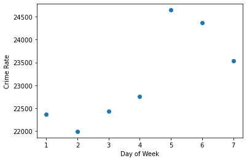
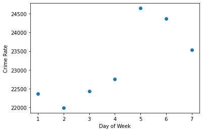

Initial Machine Learning Analysis: Linear Regression Model
We are using a supervised learning model as we are analysing labelled data. We have tested various different machine learning models to determine what the best fit would be. We began with a linear regression model. The regression model’s algorithm would attempt to learn patterns that exist among mean temperature, day of the week, hour of the day, season and crime rate. We would use this model to predict the crime rate when presented with a temperature based on previously learned patterns from the dataset. This model was successful but we wanted to test and see if there would be a better result with another model. We then tested a Random Forest Classifier which was not successful.
Correlation
 

Predictions
Final Machine Learning Analysis: Facebook Prophet
This model is used for time series forecasting and we used it to see if based on the date information of the crimes committed we could forecast the crime rates for the coming years. This model was very successful and is the model we chose as our final model.
| Date | Day of Week | Hour of Day | Type of Crime | Latitude | Longtitude | Mean Temperature | Total Precipitation | Season | Rain | Snow |
|---|